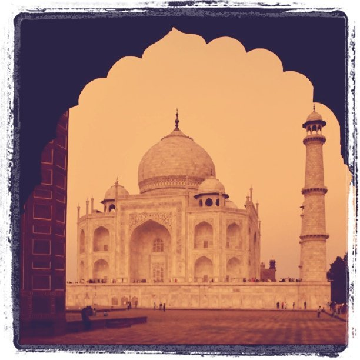

Tue, 23 Nov 2010 16:46:09 · india · agra · taj mahal · travel · city · culture · architecture · photography
twilight in taj mahal agra india

Twilight in Taj Mahal, Agra, India.
Tue, 23 Nov 2010 16:46:09 · india · agra · taj mahal · travel · city · culture · architecture · photography

Twilight in Taj Mahal, Agra, India.